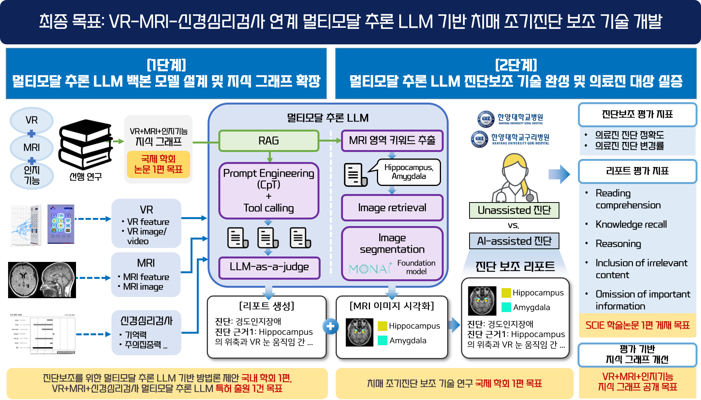
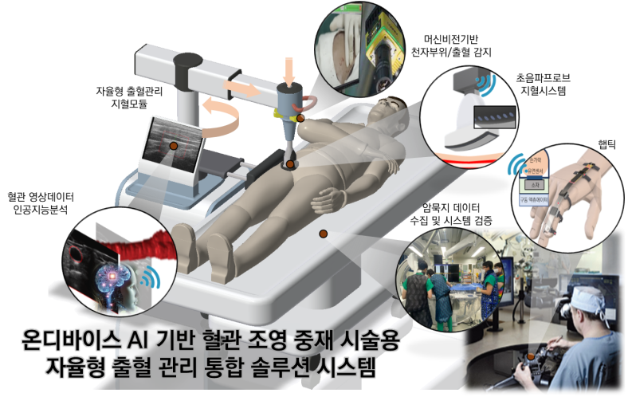
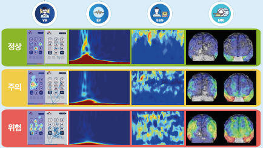
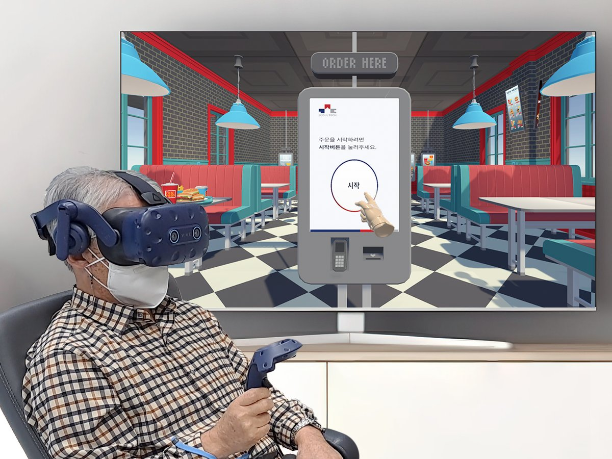

Applied AI Researcher
Yuwon Kim
PhD Candidate, Dept. of Applied Artificial Intelligence
Seoul National University of Science and Technology (SeoulTech)
Advisor: Prof. Kyoungwon Seo — HAI Lab ↗
ferrry@seoultech.ac.kr
About
My research sits at the intersection of behavioral science and AI: turning multimodal signals into explainable AI systems that support human decision-making. This multidisciplinary work is carried out in collaboration with clinicians at Asan Medical Center, engineers at the Korea Institute of Industrial Technology (KITECH), and academic collaborators at the Zurich University of Applied Sciences (ZHAW).
Research Projects
As Principal Investigator or Lead Researcher, I have led five funded R&D projects across virtual systems, clinical diagnostics, robotic intervention, and cognitive capacity assessment.
LLM-Based Clinical Decision Support Tool for Alzheimer's Disease

Multimodal reasoning integrating VR, MRI, and neuropsychological tests
View project →On-Device AI-Based Self-Guided Hemorrhage Management System

Autonomous vascular-intervention robotics using ultrasound image data
View project →AI-Based Analysis of Social Interaction Abilities via Immersive Content

For individuals with developmental disabilities
View project →VR, EP, EEG, MRI Data Aggregation for Digital Dementia Biomarker

A unified multimodal pipeline for early screening of Mild Cognitive Impairment
View project →Digital Biomarker for Early Diagnosis of Dementia in VR

The VR virtual-kiosk cognitive test and eye/hand-tracking system
View project →